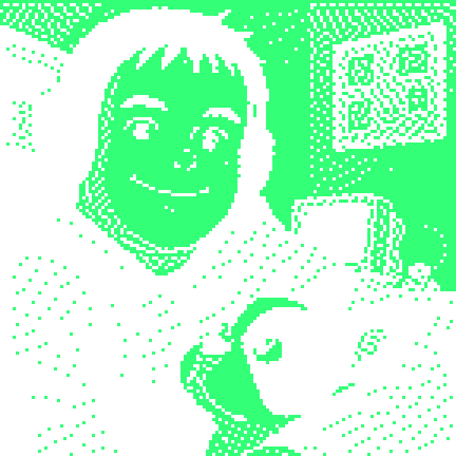

Nazarii Nyzhnyk — Senior Applied Data Scientist at Microsoft
nazar@nyzhnyk:~$ ls -la ~/links
total 7
- lrwxr-xr-x 1 nazar staff github -> github.com/nazariinyzhnyk
- lrwxr-xr-x 1 nazar staff github.alt -> github.com/nazarento
- lrwxr-xr-x 1 nazar staff linkedin -> linkedin.com/in/nazariinyzhnyk
- lrwxr-xr-x 1 nazar staff kaggle -> kaggle.com/nazariinyzhnyk
- lrwxr-xr-x 1 nazar staff telegram -> t.me/nazarento
- -rw-r--r-- 1 nazar staff mail -> nazar.nyzhnyk@gmail.com
- -rw------- 1 nazar staff mail.enc -> nazar.nyzhnyk@proton.me
nazar@nyzhnyk:~$ neofetch

nazar@nyzhnyk
- Name
- Nazarii Nyzhnyk
- Role
- Senior Applied Data Scientist @ Microsoft
- Process
- making agents smarter & faster
- Uptime
- 8 years in ML
- Location
- Prague, CZ 🇨🇿 (from Kyiv 🇺🇦)
- Kernel
- M.Sc. Applied Math, KPI
- Trophies
- 5+ hackathon podiums 🏆
- Langs
- uk · en · de · cs (wip)
- Pet
- boston terrier (has root)
nazar@nyzhnyk:~$ git log --graph career
-
0b5e55e (HEAD -> main) Apr 2026 — now
Senior Applied Data Scientist @ Microsoft
making agents smarter & faster
-
5ca1ab1 Jan 2023 — Apr 2026
Senior ML Engineer @ JustAnswer
LLMs, RAG & assistants in prod · NLP · fraud, LTV & dispute models · bandits & A/B · FastAPI on k8s
-
3db0d1e Dec 2020 — Dec 2022
Data Scientist → Tech Lead @ 3DLOOK
3D human body reconstruction from just two photos · led a team of 5
-
ba11bea Oct 2019 — Dec 2020
Data Scientist @ SKF Group (ex-Presenso)
predictive maintenance · spotting industrial machine failures in sensor time series
-
c0ffee0 Apr 2018 — Aug 2019
Data Scientist @ PIVIST
time-series forecasting for a real-time HFT engine, built from scratch
-
ba5e000 (tag: v1.0) 2013 — 2018
initial commit: B.Sc. + M.Sc. Applied Math @ Kyiv Polytechnic
probability, optimization, data mining & a lot of coffee
nazar@nyzhnyk:~$ tree ~/stack
~/stack
- evals/ eval design · metrics · A/B tests
- llm/ 🤗 transformers · openai · fine-tuning · (Q)LoRA · prompt engineering · embeddings
- rag+agents/ langchain · langgraph · llamaindex · smolagents · vector DBs · semantic search · azure ai search
- nlp/ classification · summarization · keyword extraction · text generation · spacy · nltk · speech-to-text
- ml/ scikit-learn · xgboost · catboost · lightgbm · h2o · statsmodels · tuning · ensembling
- deep-learning/ pytorch · pytorch3d · tensorflow · tflite · tfjs · keras
- vision+3d/ opencv · detection · segmentation · GANs · landmarks · pose & shape estimation · 2d→3d reconstruction
- time-series/ forecasting · anomaly detection · predictive maintenance · trading signals
- data/ pandas · numpy · scipy · postgres · mssql · oracle · mongodb · elasticsearch
- serving/ fastapi · flask · django · docker · kubernetes · helm
- mlops/ ci/cd · github actions · jenkins · dvc · prometheus · dynatrace · pagerduty · pre-commit
- cloud/ azure · aws
- viz/ plotly · dash · streamlit · gradio · matplotlib · seaborn · tableau · power bi
- langs/ python · sql · bash · r · matlab · c
14 directories, 0 regrets